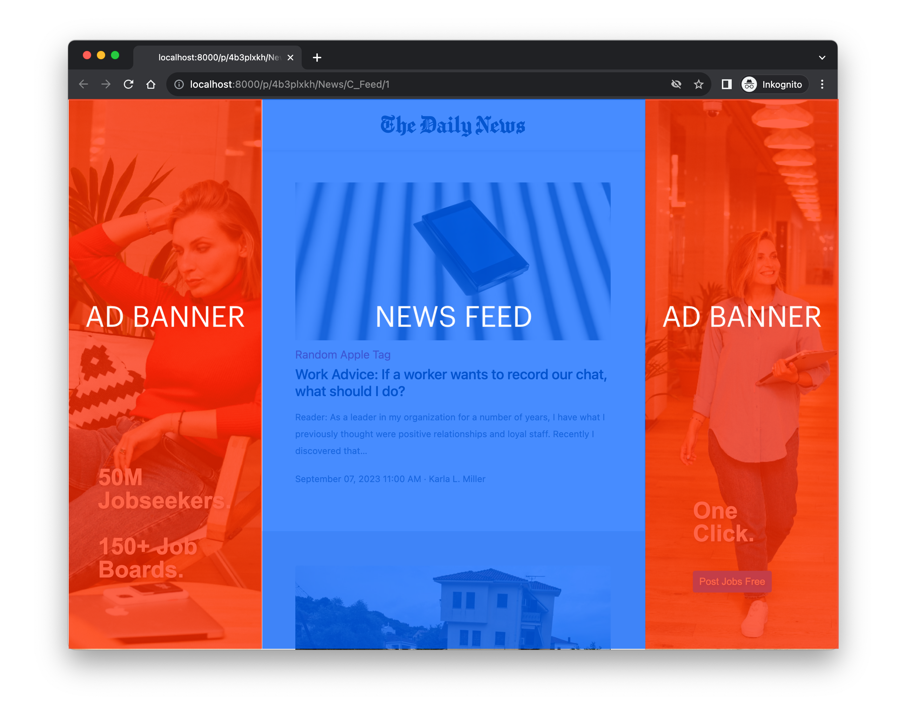

5 News in oNovitas
Basically, oNovitas consists of three columns: an ad banner (left-hand-side), the actual news feed and an additional ad banner (right-hand-side).

The news feed (which my also contain sponsored content) loops through a .*csv file that you have to provide. The news feed’s frontend consists of a sticky header that prints the news outlet’s fictitious name, news items and a button at the bottom of the page that lets participants proceed with the experiment.
Both banners consist of images and copy. To render the pair of ad banners, you have to provide at least two images because the software looks for images that match a naming convention in a specific directory. Apart from the images and copy you provide, the right-hand-side only differs from the left hand side in that it also contains a Call-To-Action (CTA) button. A click on it opens a new tab and loads a website you pre-define.
That’s it. The remainder of this chapter describes how to control and randomize each of these elements. I recommend to also read Chapter 3 because it describes how to implement your changes technically. This chapter, for instance, describes that you can change the header’s appearance by changing the newspaper_name-argument whereas Chapter 3 describes how to do that.
5.1 News Feed
The news feed requires a path to a ;-separated .*csv file. More specifically, you need to provide a data_path in the session configurations. Currently, you have three options to provide the data:
- You can provide a path within the project directory. Currently,
data_pathdefaults to'news/static/data/news.csv', for instance. I recommend to use the same directory or even overwrite that specific file for convenience. - You can upload the csv file to your Google drive and provide the corresponding URL.
- You can upload the csv file to your github repository and provide the raw URL (navigate to your csv file, click on raw and copy the resulting URL. It should start with
https://raw.githubusercontent.com/).
Your file must comprise the following columns:
| Name | Description |
|---|---|
doc_id |
Unique numeric identifier needed to loop through the csv file. Can also be used for pseudo-random sorting of content. |
condition |
If you wish to manipulate the feed between-subjects, use this column with as many values as required. |
tag |
Tag that allows you to cluster your content (e.g., technology, diet, economy). |
title |
Headline of new item. |
teaser |
Short text that describes the news item. |
content |
Full text in HTML format that only becomes visible once a participant clicks on the corresponding news item. |
author |
The news item’s author. |
publishedAt |
The day of publication. |
urlToImage |
URL to an image that shall be displayed. We recommend landscape-like ratios and sources such as unsplash.com. |
sponsored |
Dummy that indicates whether the content shall represent actual news items or native advertising. |
url |
If a news item is sponsored, you do not need any content but a URL of some landing page where the participant is directed to (in a new browser tab). |
time_stamp |
By default, the items will be sorted by a time stamp. For this reason, you should include one for each item in your data. (See sort_by in session configs.) |
... |
Add as many columns as you like. You could add a column that determines how the feed is sorted, for instance. |
You find an exemplary data set scraped from the News API in your project folder (after you unzipped it)1 oNovitas/news/static/data/news.csv or here on github.
Technically, all the requirements and mechanisms mentioned above are defined in creating_subsession() and read_feed() in oNovitas/news/__init__.py.
5.1.1 Sticky Header
You can control the name displayed in the sticky header in the session configurations. Currently, newspaper_name defaults to ‘The Daily News’.
5.1.2 News Items
As outlined above, the news items are defined in a csv file. The feed just loops through each row and checks whether sponsored is True or False.
If sponsored == False, the content is displayed as a regular news item. Clicking on it opens a modal (or ‘pop-up window’) that displays the full content, that is, the full text alongside some meta data such as the author, etc.
5.1.3 Sponsored Content
If sponsored == True, the content is displayed slightly differently. For instance, the item’s background color is rather beige than white. In addition, there is a sponsored tag indicating the native advertisement. Importantly, a click on the item directs the participant towards a landing page. It does not open the modal a participant is exposed to when clicking on a news item.
5.3 Manipulation and Randomization
Currently, the software allows you to manipulate across two dimensions between-subjects: the news feed (e.g. news items in favor of vs. against a certain topic) and the banners (e.g. ad copy in passive vs. active tone).
Download this file and follow the instructions in Section 2.1.3.↩︎